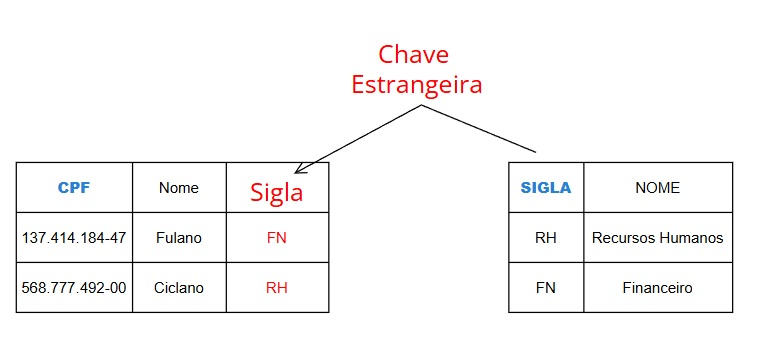

4 Tomada de Decisão de Gestão do Conhecimento: Business Inteligence
( Consultar livro LAUDON, Kenneth C.; LAUDON, Jane P. Sistemas de informação gerenciais. 11. ed. São Paulo: Pearson Education do Brasil, 2010. p. 180. )
O que é Business Inteligente (Inteligência Empresaria) ?
Business Intelligence (BI) refere-se à infraestrutura para coletar, armazenar, analisar e fornecer dados que podem ajudar os gerentes a tomar melhores decisões. Essencialmente, BI transforma dados brutos em informações úteis e insights para apoiar a tomada de decisão organizacional. [2] Ralph Kimball - Datawarehouse Toolkit (2013)
4.1 Introdução: Visitando a teoria de Bancos de Dados

Banco de Dados é um conjunto de arquivos relacionados entre si com registros sobre algum assunto: pessoas, lugares ou coisas. [[1] - LAUDON, Kenneth C.; LAUDON, Jane P. *Sistemas de informação gerenciais*. 11. ed. São Paulo: Pearson Education do Brasil, 2010. p. 180.]

Banco de Dados Relacional é um tipo comum de banco de dados que organiza os dados em tabelas (denominadas entidades) com colunas e linhas [[1] - LAUDON, Kenneth C.; LAUDON, Jane P. *Sistemas de informação gerenciais*. 11. ed. São Paulo: Pearson Education do Brasil, 2010. p. 180.]
O Banco de Dados Relacional organiza as informações em tabelas bidiomensionais constituídas de linhas e colunas chamadas e essas tabelas recebem o nome de relações. Cada relação possui um campo-chave que confere identificação exclusiva a cada registro da tabela.
4.1.1 Modelo Conceitual “Entidade Relacionamento” de Banco de Dados
O Modelo Entidade-Relacionamento (MER), proposto por Peter Chen em 1976, é uma ferramenta fundamental na modelagem de dados. É um modelo de dados de alto nível que descreve a estrutura conceitual de um banco de dados. O Modelo Entidade-Relacionamento (MER) é representado graficamente através de um DER (Diagrama Entidade-Relacionamento).
É utilizado para projetar Bancos de Dados Relacionais a partir de entrevistas onde se descreve as informações que se deseja armazenar de forma consistente. Exemplo:
“Desenhe um diagrama entidade-relacionamento DER contendo as entidades funcionarios e departamentos. A entidade ”funcionários” possui os atributos ”nome” e ”CPF”. A entidade ”Departamentos” possui os atributos ”Nome” e ”sigla”. O atributo ”CPF” é chave primária da entidade ”Funcionários”. O atributo ”sigla” é chave primária da entidade ”Departamentos”. As entidades ”Funcionários” e ”Departamentos” se relacionam através de um relacionamento chamado ”Pertence”.”

Segundo Laudon
Diagrama Entidade/Relacionamento (DER) é uma representação esquemática utilizada para entender as relações entre as tabelas de um banco de dados relacional. [[1] - LAUDON, Kenneth C.; LAUDON, Jane P. *Sistemas de informação gerenciais*. 11. ed. São Paulo: Pearson Education do Brasil, 2010. p. 180.]
4.1.2 Composição e Significado do Diagrama Entidade Relacionamento (DER)
| Nome | Desenho | Significado |
| Entidade |  |
Representa uma tabela e é identificada no texto por um substantivo. |
| Nome | Desenho | Significado |
| Atributo |  |
Representa uma coluna e é identificada no texto por um adjetivo. |
| Nome | Desenho | Significado |
| Relacionamento |  |
Representa uma Referência e é identificada no texto por um Verbo. |
4.1.3 Geração do modelo Físico para aplica-lo ao SGBD (Sistema de Gerenciamento de Banco de Dados):
Uma vez que o modelo conceitual seja gerado, o analista pode mapea-lo para um “modelo físico” onde se mapeiam chaves primárias e chaves forasteiras nas tabelas.
Após a geração do modelo físico pode-se gerar o SQL que monta a estrutura do Banco de Dados.

4.1.4 Código SQL - Implementação do Modelo Físico
-- Exemplo testado e gerado no SGBD Postgres versão 15
-- Tabela Funcionários
CREATE TABLE IF NOT EXISTS "public".funcionarios
(
cpf bigint NOT NULL,
nome varchar(200)
);
-- Tabela Departamentos
CREATE TABLE IF NOT EXISTS "public".departamentos
(
sigla integer NOT NULL,
nome varchar(200)
);
-- Definindo a coluna "cpf" da tabela "funcionários" como chave primária
alter table "public".funcionarios add constraint "chave_primaria_funcionarios" primary key (cpf);
-- Definindo a coluna "sigla"" da tabela "departamentos" como chave primária
alter table "public".departamentos add constraint "chave_primaria_departamentos" primary key (sigla);
-- Gerando a integridade referêncial
-- Importando a chave primária da tabela "departamentos" como "chave estrangeira"
-- na tabela "funcionários"
-- primeiro adiciona-se a coluna estrageira "sigla" que é coluna originalmente
-- pertencente a tabela departamentos
alter table "public".funcionarios add column sigla integer;
-- finalmente conecte a coluna sigla a chave primária da tabela "departamento"
-- criando então uma chave estrageira na tabela "funcionários".
alter table "public".funcionarios add constraint "Chave_estrangeira_Departamento_funcionarios" foreign key (sigla) references "public".departamentos(sigla);4.2 EXEMPLO: MONTADORA
4.2.1 Modelo Matemático
Construa um Banco de Dados com suporte a consistência das informações. Utilize para isso o modelo Relacional. Precisamos armazenar as informações dos Veículos, Montadoras e Proprietários;

4.3 Normalização em Bancos de Dados Relaionais
4.3.1 Tabela Desnormalizada

Considere a tabela Veículos abaixo:
| Modelo | Montadora |
|---|---|
| Strada | Fiat |
| Mobi | Fiat |
| Pulse | Fiat |
| Onix | Chevrolet |
| Tracker | Chevrolet |
| Onix Plus | Chevrolet |
| Polo | Volkswagen |
| Nivus | Volkswagen |
| T-Cross | Volkswagen |
| HB20 | Hyundai |
| Creta | Hyundai |
Separamos o conjunto de elemntos Montadoras e Modelos.
| MontadoraID | Montadora |
|---|---|
| 1 | Fiat |
| 2 | Chevrolet |
| 3 | Volkswagen |
| 4 | Hyundai |
| ModeloID | Modelo |
|---|---|
| 101 | Strada |
| 102 | Mobi |
| 103 | Pulse |
| 201 | Onix |
| 202 | Tracker |
| 203 | Onix Plus |
| 301 | Polo |
| 302 | Nivus |
| 303 | T-Cross |
| 401 | HB20 |
| 402 | Creta |
O processo de fragmentar agrupamentos complexos de dados e simplifica-los a fim de minimizar redundâncias e economizar espaço no Banco de Dados Relacional é chamado de NORMALIZAÇÃO. [[1] - LAUDON, Kenneth C.; LAUDON, Jane P. *Sistemas de informação gerenciais*. 11. ed. São Paulo: Pearson Education do Brasil, 2010. p. 180.]
Mas Como indicar que cada elemento da tabela “Modelo” está associado a um elemento da tabela “Montadora” ?
4.3.2 Tabela Normalizada
Considere as tabelas abaixo:
| MontadoraID | Montadora |
|---|---|
| 1 | Fiat |
| 2 | Chevrolet |
| 3 | Volkswagen |
| 4 | Hyundai |
| ModeloID | Modelo | MontadoraID |
|---|---|---|
| 101 | Strada | 1 |
| 102 | Mobi | 1 |
| 103 | Pulse | 1 |
| 201 | Onix | 2 |
| 202 | Tracker | 2 |
| 203 | Onix Plus | 2 |
| 301 | Polo | 3 |
| 302 | Nivus | 3 |
| 303 | T-Cross | 3 |
| 401 | HB20 | 4 |
| 402 | Creta | 4 |
Repare que:
É possível identificar que não existem montadoras repetidas na tabela “Montadoras”;
É possível identificar que não existem modelos repetidos na tabela “Montadoras”;
A coluna (atributo) ModeloID é a chave primária da tabela Modelos. A coluna (atributo) MontadoraID é a chave primária da tabela Montadoras.
Na tabela Modelos, a coluna MontadoraID, acrescentada a tabela Modelos representa a ligação de cada elemento da tabela Modelos e Montadoras. Essa coluna “importada” da tabela Montadoras para a tabela Modelos se chama chave estrangeira.